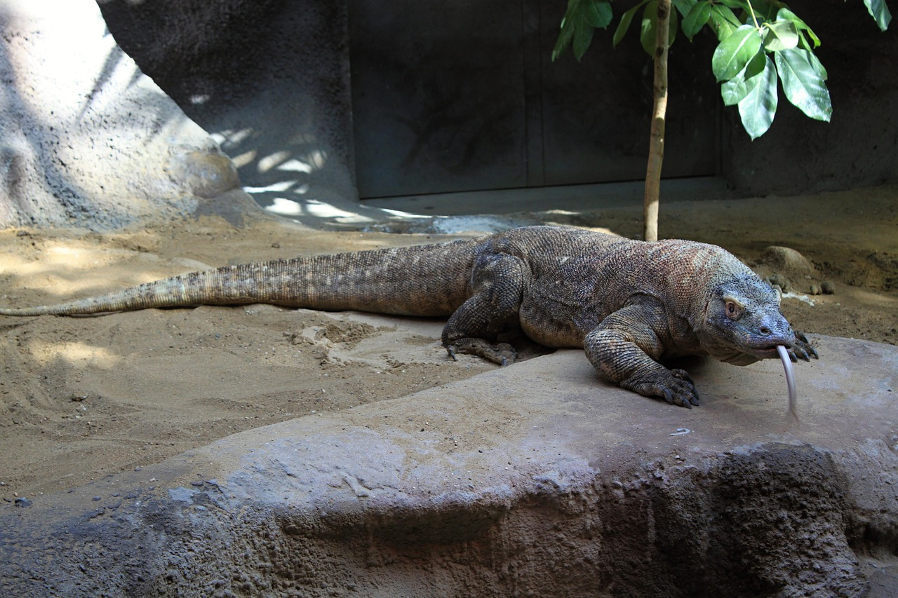

Apa itu Komodo?

Komodo adalah kadal raksasa yang hidup di Indonesia, terutama di Pulau Komodo, Rinca, dan sekitarnya. Hewan ini bisa panjang lebih dari 2–3 meter, berbadan kuat, dan punya gigitan berbisa yang membantu mereka menjatuhkan mangsa. Mereka adalah predator puncak yang memakan rusa, babi, bahkan kerbau, dan terkenal sebagai salah satu reptil paling besar dan kuat di dunia.
Fakta Menarik

Komodo hidup di beberapa pulau di Indonesia seperti Komodo, Rinca, dan Flores, biasanya di savana kering dan hutan panas. Mereka punya lidah bercabang untuk mendeteksi bau, gigi kuat berlapis besi, dan gigitan berbisa yang membuat mangsa lemah. Selain mampu berburu hewan besar dengan cara menyergap, komodo juga unik karena betinanya bisa berkembang biak tanpa pejantan. Kawasan tempat mereka tinggal dilindungi dalam Taman Nasional Komodo, yang juga menjadi salah satu situs warisan dunia UNESCO.
Kenapa Peduli?

Kita perlu peduli karena komodo adalah hewan langka yang cuma ada di Indonesia, jadi kalau punah, dunia kehilangan spesies unik dan Indonesia kehilangan bagian penting dari identitas alamnya. Komodo juga menjaga keseimbangan ekosistem di pulau tempat mereka hidup, jadi kalau mereka hilang, rantai makanan bisa rusak. Selain itu, keberadaan komodo memberi manfaat besar lewat pariwisata dan penelitian, sehingga menjaga mereka berarti menjaga alam, ekonomi, dan warisan negara sendiri.
| Pertanyaan |
Informasi |
| Asal |
Indonesia |
| Lokasi |
Pulau Komodo, Rinca, Flores dan lain-lain |
| Ciri Utama |
Gigitan berbisa, lidah bercabang, gigi kuat |
| Status |
Terancam punah (Endangered) |